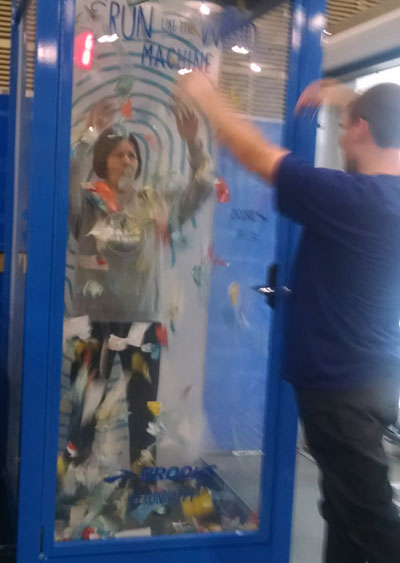
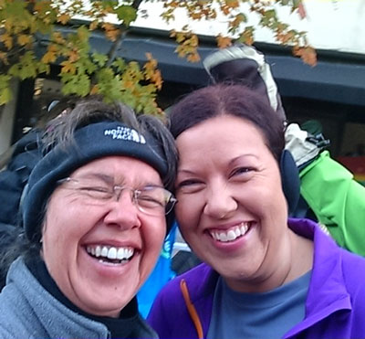
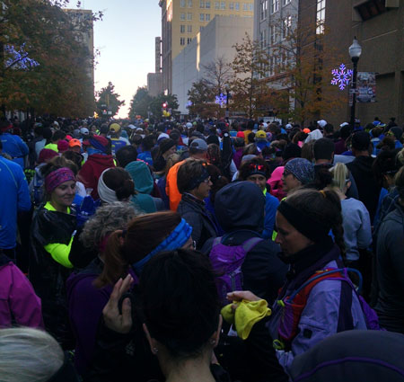
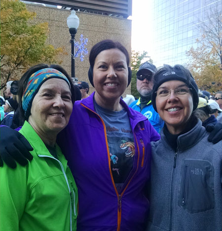
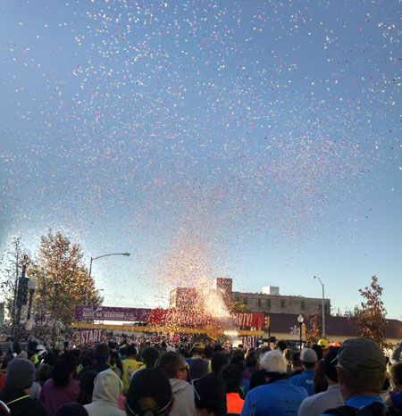
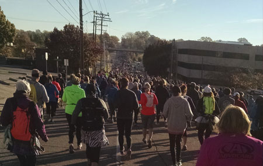
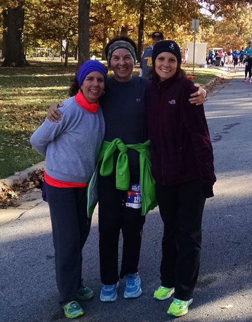
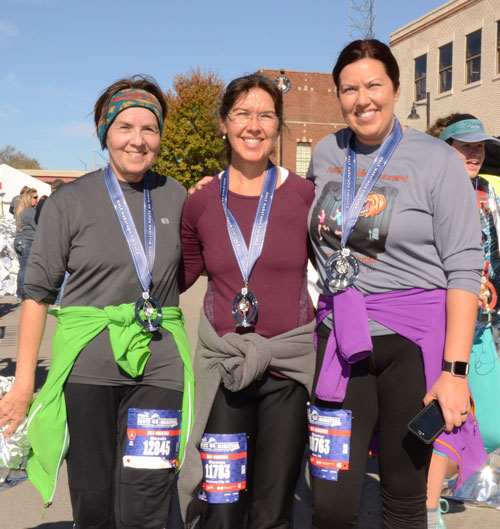
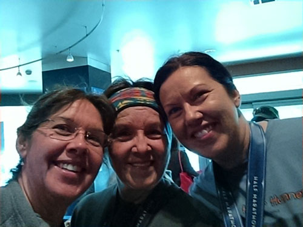
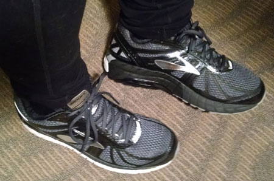

November 19th & 20th, 2016
| Many years ago, Mom was post-knee-surgery and
needed to walk a half marathon instead of running it as she usually
does. My sister Desirae and I decided to join her and thus started a
tradition of walking two half marathons (or more) together per year.
Unfortunately, this one hurt my knees so I'm going to have to retire from
this sport. It was fun while it lasted though, as you can see in
these pictures of my grand finale half marathon. |
|
 |
 We're not even to the starting line and we're already dissolving into crazy laughter. Oh wait, it's really just me... |
| The girls talked me into playing this game (Mom is shown playing here) at the Brooks booth, and I won a free pair of shoes! Too cool. |
|
 |
 |
| Just a few of the thousands of people who were ahead of us. | Mom was trying to come to terms with being in Coral D for the first time in
her life. I'm sure it will be the last time too, she didn't care for it back there! |
 |
 Trying to show the seemingly endless swath of people ahead of us on the course |
| They were kind enough to do the big confetti fanfare for each corral | |
 |
 |
| Mom's buds were volunteering at the water stops and we were blessed to find them | Finished! 3 hours and 18 minutes I think, one of our faster times. |
 |
 |
| Back at the hotel, starting to feel kinda sore now | My free Brooks Beast shoes. That's my favorite price! |